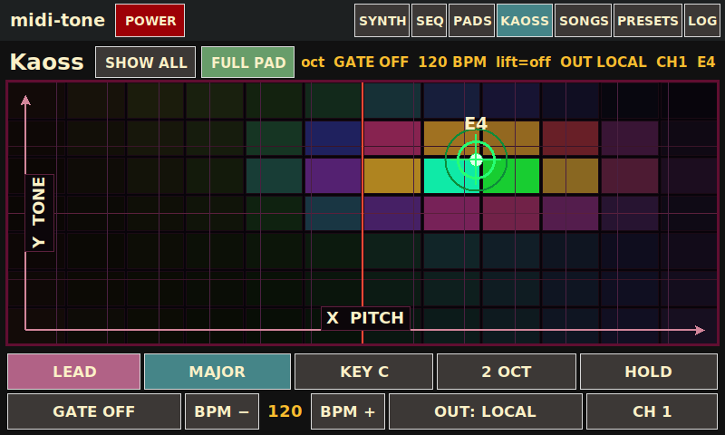
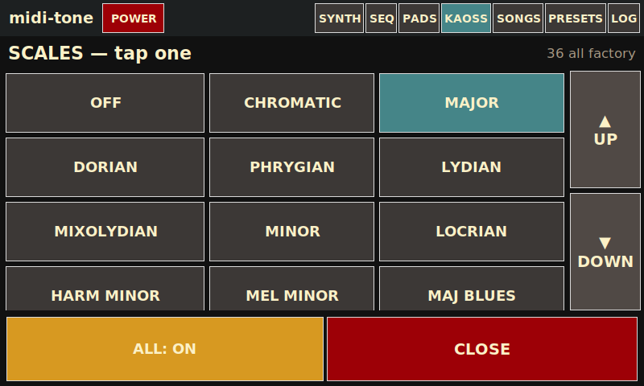
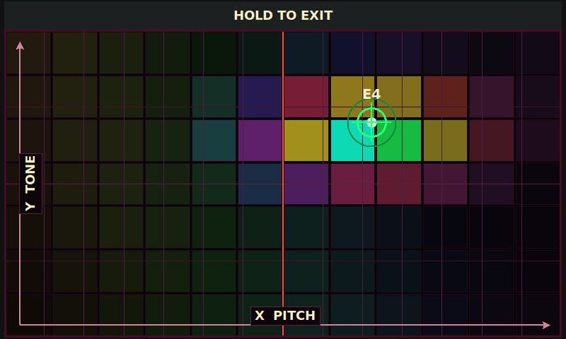
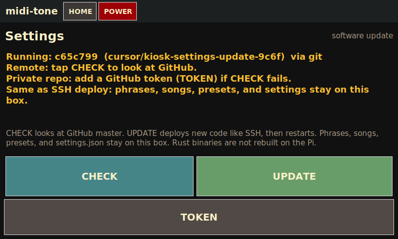
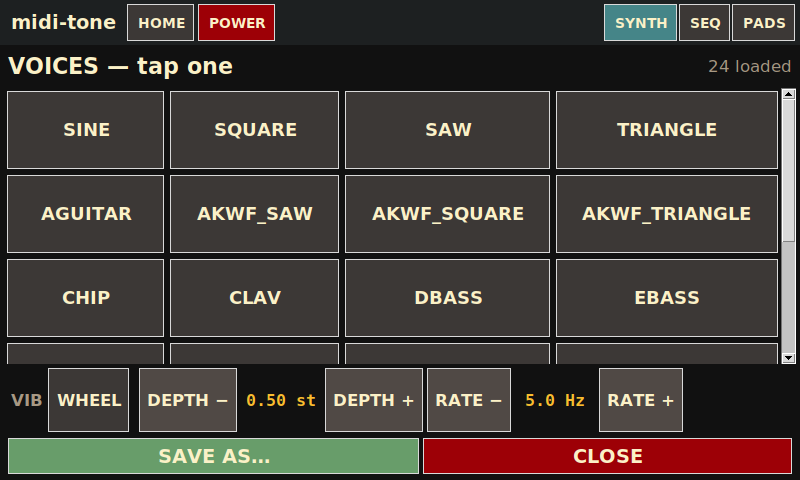
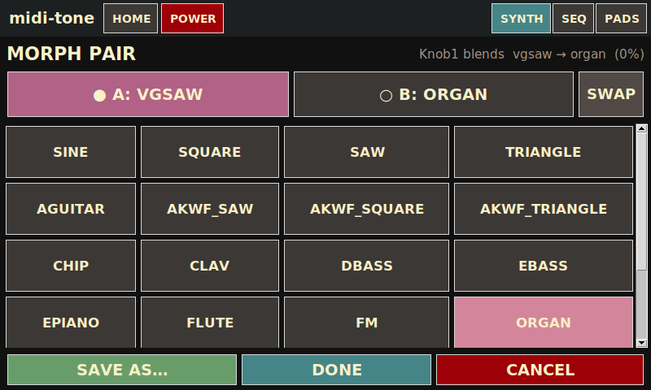
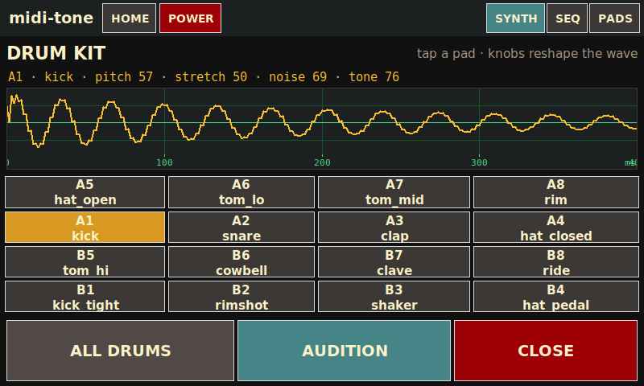
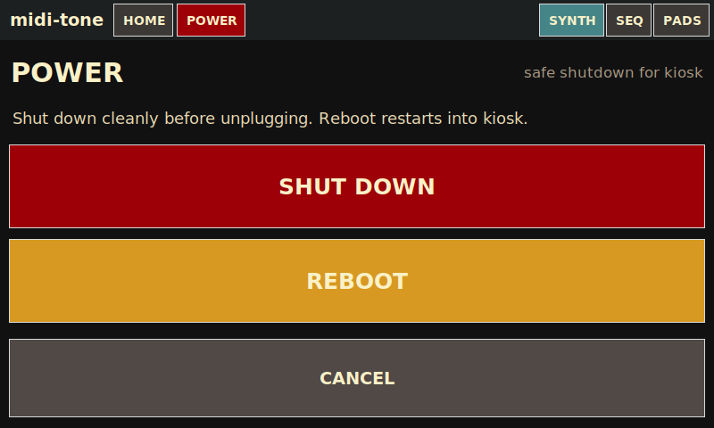
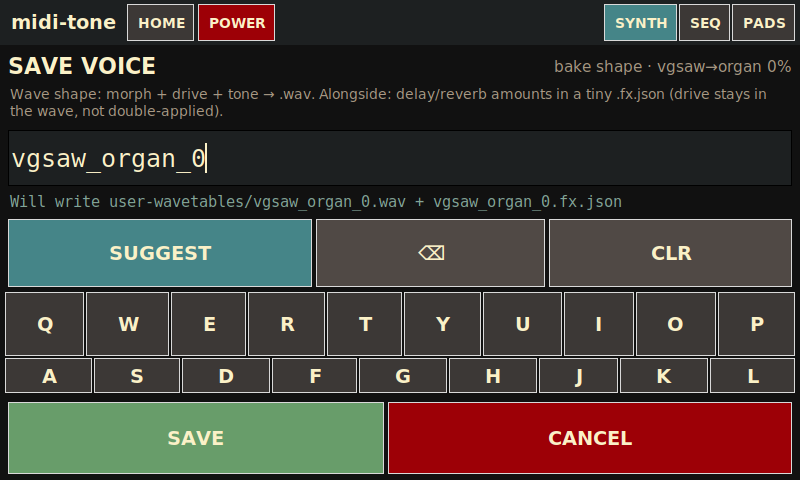

Global chrome
Always visible on every primary mode.
| midi-tone | App title (not a button). |
|---|---|
| HOME | Launcher tiles for every mode. Always in the top bar. |
| POWER | Shutdown / reboot, SCREEN OFF, and blanking-timeout cycle (kiosk-safe — no desktop power UI). |
| SYNTH / SEQ / PADS / KAOSS | Jam shortcuts — visible only while you are in those four modes. |
HOME
Launcher for every mode. New screens get a tile here instead of another persistent tab.

| SYNTH / SEQ / PADS / KAOSS | Jam cluster. Those four also stay as top-bar shortcuts while you are in them. |
|---|---|
| SONGS | Play Standard MIDI Files locally and/or out USB→DIN; BPM and loop controls. |
| PRESETS | Eight named slots for a full session snapshot, plus FACTORY reset. |
| LOG | Scrolling MIDI / UI event log with CLEAR and panic. |
| SET | Software update: show the running commit, CHECK GitHub, UPDATE & restart. Songs / presets / phrases stay. |
SYNTH
Main performance surface: morphing wavetable voice, CRT scope, and transport / mode buttons.

| CRT scope | Live picture of the current morph wavetable (tiled to three periods). Updates when morph / voice changes. |
|---|---|
| Morph caption | Shows endpoints and blend, e.g. Morph · sine → square 0%. |
| Last event | Short line for the latest UI / MIDI action (voice change, knob label, etc.). |
| Active notes | Which keyboard notes are currently held. |
| Knob readout | Live summary that follows the current knob focus — morph % · tone · Syn / Drm levels · bend · vib when editing the synth; drum macros in DRUM MODE; drive / delay / reverb in FX MODE or BUS FX. |
| ALL NOTES OFF | Panic — silence all sounding notes immediately. |
| FULL VEL | Toggle: force velocity 127 on note-ons (easier on a light touch), or use real velocity. |
| FX MODE | Remaps MPK knobs to the current insert FX target and opens a live FX readout panel. Highlighted when on. |
| BUS FX | Remaps knobs to the global mix-bus FX (wet on the whole soft-synth mix) and opens the same FX panel. |
| ◀ PREV / NEXT ▶ | Step morph-A voice; parks morph at pure A. Center label shows current pair / blend; tap it to open VOICES. |
| VOICES | Scrollable voice grid plus on-screen vibrato controls. |
| MORPH | Overlay to set morph endpoints A/B (SWAP / DONE / CANCEL). |
| KIT | Drum pad grid; ALL DRUMS for kit FX; WAVE drills into a CRT one-shot scope. |
| DRUM MODE | When on, knobs 1–4 edit drum macros (pitch / stretch / noise / tone) and knob 8 is drum bus level. |
SEQ (Sequencer)
Free-timing overdub looper: record a backbone length, then stack layers of keys and drums.

| REC BACKBONE / OVERDUB | First press starts recording the backbone; press again to lock loop length and begin playback. Later REC starts an overdub take. |
|---|---|
| PLAY / ■ STOP | Start or stop sequencer playback (needs a backbone). |
| KEEP | Commit the pending overdub layer into the stack. |
| DROP | Discard the pending overdub take. |
| UNDO | Peel off the last committed layer. |
| LEN ×2 / LEN ÷2 | Double or half the loop length (within limits / existing layer constraints). |
| OVERDUB: WRAP / EXTEND | WRAP loops within the current length; EXTEND can grow the cycle while overdubbing. |
| STOP ALL | Stop recording and playback. |
| CLEAR | Wipe the sequence. |
| ALL NOTES OFF | Panic. |
PADS — EDIT
Build and fine-tune the 16 phrase pads (record into empty pads, set trigger / voice / channel / vibrato / volume).

| PLAY / EDIT | Toggle views. EDIT allows recording into empty pads and shows detail controls. |
|---|---|
| Pad grid A1–B8 | Empty pad: tap to arm record. Filled pad: launch / select for editing. Green = playing, blue = clip ready, teal = selected, gray = empty, red = recording. Loop vs one-shot is the ↻ / ▶ mark, not the fill. |
| STOP REC | Finish an in-progress pad recording. |
| MODE | Arm, then tap a pad to toggle that pad ONE-SHOT ↔ LOOP. |
| CLEAR | Arm clear, then tap a pad to erase it. |
| STOP ALL | Stop all playing phrases. |
| OUT | Cycle phrase output: LOCAL / USB / BOTH (shares song USB port). |
| TRIG | Per-selected-pad: one-shot vs loop trigger. |
| FOLLOW / LOCK | Pad follows the live global morph, or locks a voice snapshot (and related FX). |
| CH | Force MIDI out channel or keep the recorded channel. |
| SYNTH | Enable / mute local soft-synth for that pad. |
| VIB | Use the vibrato baked at record time, or follow the live rig (VIB live). |
| VOL− / VOL+ | Per-pad gain trim (about 10% per tap). |
PADS — PLAY
Performance grid: launch and stop clips without arming record.

| Pad grid | Tap filled pads to launch / toggle. Empty pads only select (no record in PLAY). Green = that clip is sounding; blue = ready. ↻ is LOOP, ▶ is one-shot. |
|---|---|
| STOP ALL | Stop every playing phrase. |
| OUT | LOCAL / USB / BOTH routing for phrase MIDI. |
KAOSS
XY touch pad in the Kaossilator / Kaoss Pad tradition — play scale notes on the onboard synth and/or send notes + factory CCs to a hardware synth.

| XY pad | Press / slide / lift. An L-shaped legend marks the axes: X along the bottom (pitch on note programs), Y up the left (tone / morph / vibrato, or an FX pair). The surface is a cheap LED matrix (hue from X, glow + trail under the finger, tap ripples, BPM / GATE pulse). Grid lines mark scale degrees (roots are brighter). |
|---|---|
| PROG / SCALE / KEY / OCT / GATE | Each opens a tap-to-pick grid (same idea as VOICES) instead of cycling. PROG picks a pad mapping — see Programs. SCALE / KEY / OCT lock the note grid. GATE arps note programs only. |
| HOLD | Freeze the last XY after you lift — same idea as Kaossilator SHIFT+hold. On an FX program it also keeps the wet mix. |
| BPM − / + | Gate arp tempo. Stay on the pad while you nudge. |
| FULL PAD | Hide nav + buttons so the pad fills the panel. Hold still on the bottom edge (~0.7s) to peek the control bar; tap the pad to hide it. EXIT on that bar leaves full pad. |
| ⚙ | KAOSS settings: SHOW ALL, X/Y axis labels on/off, grid lines on/off (1–5 px), PAD VIZ (GLOW / CELLS), LOCAL / USB / BOTH, MIDI channel 1–16. Saved in settings.json. |
Factory MIDI matches the original Kaoss Pad manual so a DIN synth can treat the Pi as a Kaoss controller: CC#12 = X, CC#13 = Y, CC#92 = pad touch. Playing while SEQ is recording captures the pad notes.
KAOSS programs
PROG is two families. Note programs play the scale on X (Kaossilator). FX programs do not start a note — they only move filter / morph / delay / reverb on whatever is already sounding (Kaoss Pad).
FILTER does not play notes. If you open FILTER and tap an empty pad, you hear silence — that is expected. Latch a sound first: pick LEAD, tap a note, turn HOLD on, lift, then pick FILTER. The note keeps ringing. X is the resonant low-pass (dark left → bright/open right, same Chamberlin LPF as the MPK tone knob, ~90 Hz–8 kHz, bypass when fully open). Y is a momentary morph between SYNTH A and SYNTH B (the pair from SYNTH → MORPH). Lift restores tone + morph unless HOLD stays on. Keyboard, SEQ, and phrase pads work the same way: play something, then FILTER sculpts it.
Note programs — X = scale pitch
| LEAD | Y = TONE. Play the scale. Y opens the low-pass (sticky — stays where you left it). Bottom of the pad is also quieter velocity. |
|---|---|
| MORPH | Y = MORPH. Play the scale. Y crossfades SYNTH A → B (sticky). Set the pair in SYNTH → MORPH. |
| VIB | Y = VIB. Play the scale. Y is vibrato depth. Lift restores the previous vibrato so it does not stick when you leave VIB. |
| LEVEL | Y = LEVEL. Play the scale. Y is synth volume. |
| DECAY | Y = DECAY. Play the scale. Y is release time (how long the note rings after lift). |
| ATTACK | Y = ATTACK. Play the scale. Y is attack time (slow swell toward the top of the pad). |
| OCTAVE | Y = OCTAVE. Play the scale. Y adds up to two extra octaves on top of the X note. |
| GRIT | Y = DRIVE. Play the scale. Y is saturation. |
| DELAY | Y = DLY MIX. Play the scale. Y is echo send. |
FX programs — no pitch from the pad
Lift restores the previous mix unless HOLD is on. ⚙ SHOW ALL reveals RESO / WASH / CRUSH / SWEEP (and the extra note programs).
| FILTER | X = TONE (filter cutoff), Y = MORPH (voice blend, momentary). Use the HOLD recipe above — this is the KP-style filter pad, not a keyboard. |
|---|---|
| ECHO | X = DLY T (~50–750 ms), Y = DLY MIX (how loud the repeats are). |
| DRIVE | X = DRIVE (saturation), Y = REVERB (reverb send). |
| SPACE | X = ECHO (delay mix), Y = REVERB (reverb mix) — wash without touching pitch. |
| RESO | X = TONE, Y = FB (delay feedback) — resonant repeats. |
| WASH | X = SIZE (reverb size), Y = REVERB (reverb mix). |
| CRUSH | X = DRIVE, Y = TONE — distort and darken a held note. |
| SWEEP | X = TONE, Y = DLY T — filter vs delay time. |
KAOSS scales
Opened from KAOSS → SCALE. Same idea as VOICES: tap a full name instead of cycling three-letter Korg codes.

| Scale tiles | Pick the scale that locks X. Current scale is highlighted. Drag or use ▲ / ▼ to scroll the factory list. |
|---|---|
| CLOSE | Back to the XY pad without changing scale. Turn on SHOW ALL from KAOSS ⚙ if you want the full factory list. |
KAOSS full pad
Opened from KAOSS → FULL PAD once program / scale / key are set. The pad takes the whole 800×480 panel.

| Pad | Same XY play as the settings view, just larger. LED field, axes, HOLD / gate still apply. |
|---|---|
| Bottom edge | Drag onto the bottom of the screen and stay still about 0.7s. A gold strip counts down, then the control bar peeks. Sliding along the pad, or parking on the left/right/top, does not reveal it. Tap the pad to hide the bar; EXIT leaves full pad. |
SONGS
Browse songs/ MIDI files, set tempo, play locally and/or to USB MIDI out.

| BPM − / + / −5 / +5 | Nudge playback tempo relative to the file. |
|---|---|
| Song list + ▲ / ▼ | Tap a .mid row to select; page with the chunky ▲ / ▼ buttons. |
| PLAY / STOP | Start or stop song playback. |
| SAVE SEQ | Export the current sequencer arrangement into songs/ as a MIDI file. |
| DELETE | Remove the selected file from songs/. |
| OUT | LOCAL / USB / BOTH — soft-synth and/or hardware DIN via USB MIDI adapter. |
| SONG LOOP | Repeat the file when it ends. |
Demo songs seed into songs/ on first launch if missing; they are not overwritten if you delete them.
PRESETS
Eight touch slots for a named full session (not just the synth patch).

| Slots 1–8 | Tap to select. Shows name plus a short tag (e.g. layer / pad counts, or session). |
|---|---|
| FACTORY | Hard-reset morph, tone, drums, levels, and FX to baked-in defaults (autosaved as the current session). |
| LOAD | Restore the selected slot (synth, sequencer, phrases, songs prefs, screensaver timeout, related UI state). |
| SAVE | Opens a name pad, then writes the full session into the selected slot. |
| DELETE | Clear the selected slot file. |
Autosave also keeps a separate settings.json session so a reboot returns where you left off.
LOG
Diagnostic event stream for MIDI and UI actions.

| Last event | Same short status line used on SYNTH (latest action). |
|---|---|
| Event list | Scrolling history of notes, mode changes, and other messages. |
| CLEAR LOG | Wipe the on-screen log. |
| ALL NOTES OFF | Panic. |
SET (Settings)
Opt-in software update from GitHub master. The instrument stays offline until you tap CHECK / UPDATE.

| Running / remote | Local commit (from git or version.json) and, after CHECK, the tip of master. |
|---|---|
| CHECK | Ask GitHub whether master is ahead. Does not install. |
| UPDATE | If behind: confirm, deploy the whole repo (kiosk + crates + presets + committed dist/armv7 engines into bin/), restart kiosk and any midi-engine / jambox-engine units. Second tap is INSTALL NOW. |
| TOKEN | Store a GitHub PAT on the box (private repo). Written to .update-credentials. |
Same as SSH deploy: never overwrites settings.json, songs/, phrases/ (pad recordings), user-presets/, user-wavetables/, or presets/active.json. Does not cargo-build on the Pi — engines are the committed dist/armv7 binaries (rebuild with ./deploy/build-pi-bins.sh before pushing crate changes).
VOICES overlay
Opened from SYNTH → VOICES (or tapping the center voice label).

| Voice tiles | Tap to pick morph-A (parks morph at pure A). Drag to scroll the grid on the capacitive panel. |
|---|---|
| VIB row | WHEEL / ON plus DEPTH −/+ and RATE −/+ — on-screen vibrato without the mod wheel. |
| SAVE AS… | Bake the current morph / timbre into a new named wavetable under user-wavetables/. |
| CLOSE | Return to SYNTH. |
MORPH overlay
Choose which two voices Knob 1 morphs between.

| A / B side buttons | Select which endpoint the next grid tap assigns (after A, B is armed automatically). |
|---|---|
| Voice grid | Assign the chosen side; drag to scroll. |
| SWAP | Flip A↔B and invert the blend so the sound stays put. |
| SAVE AS… | Bake the current morph cycle to a new user wavetable. |
| DONE | Keep the pair and return to SYNTH. |
| CANCEL | Restore the pair you walked in with. |
Knob 1 blends A→B while you play. Opening MORPH turns off DRUM MODE / FX MODE / BUS FX so Knob 1 stays morph.
KIT overlay
Drum models for MPK pads, with an optional WAVE drill-down and FX targeting.

| Pad / model buttons | Select and audition which drum you’re editing. |
|---|---|
| ALL DRUMS | Point insert FX at the shared kit bus (one echo/drive for the whole kit). |
| WAVE | Full-screen CRT scope for the selected one-shot; knobs reshape it live. BACK returns to the grid. |
| CLOSE | Return to SYNTH. |
With FX MODE off, opening a kit pad turns on DRUM MODE so knobs 1–4 reshape the body. With FX MODE on, kit selection aims the insert FX target instead.
POWER
Kiosk-safe power and burn-in controls (no desktop session UI).

| BLANK … | Header button cycles auto-blank timeout (1 / 3 / 10 min / off). Idle is touch-only — MIDI does not postpone blanking. |
|---|---|
| SCREEN OFF | Blank the TFT now. Tap the panel to wake; playing MIDI will not. |
| SHUT DOWN | Power the Pi off cleanly. |
| REBOOT | Restart into the kiosk. |
| CANCEL | Return to the previous mode. |
SAVE AS…
Bake the current morph timbre into a new user wavetable.

| Name field / keyboard | Enter a name for the new single-cycle WAV under user-wavetables/. |
|---|---|
| SAVE | Write the baked wave (drive/tone folded in) plus a delay/reverb sidecar when present. |
| CANCEL | Dismiss without writing. |
MPK knobs (default mapping)
Factory MPC program (Prog Select → Pad 1). When FX MODE, BUS FX, and DRUM MODE are off:
| Knob 1 | Morph A→B |
|---|---|
| Knob 2 | Tone / brightness (low-pass) |
| Knob 3 | Attack |
| Knob 4 | Release |
| Knob 5 | Vibrato depth |
| Knob 6 | Vibrato rate |
| Knob 7 | Reserved / free |
| Knob 8 | Synth bus level (drum bus level while DRUM MODE is on) |
DRUM MODE remaps knobs 1–4 to pitch / stretch / noise / drum-tone. FX MODE / BUS FX remap knobs 1–6 to drive, delay time/feedback/mix, and reverb size/mix (and open the live FX panel). Pitch bend and the mod wheel still affect the voice as usual.